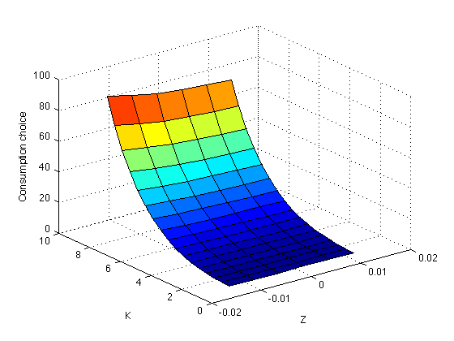
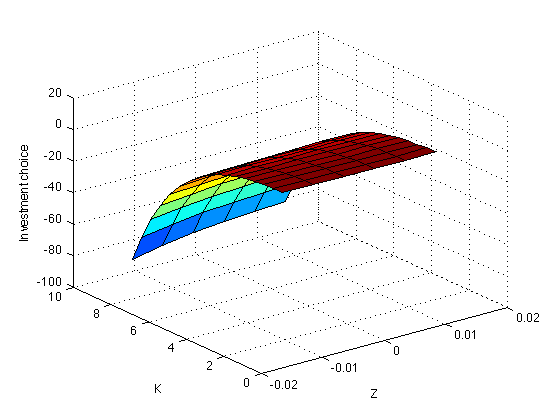
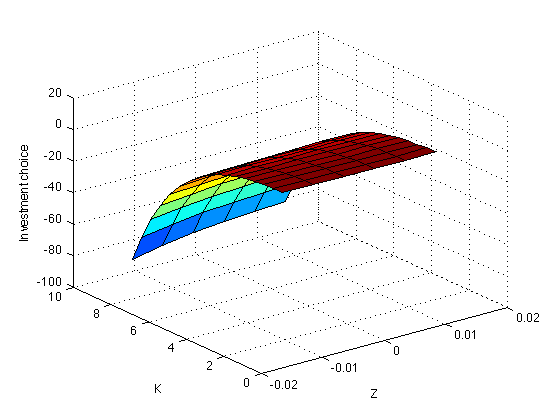

This script solves the stochastic growth model using the parameterized expectation algorithm
% Administrative commands clear all clc rand('state',1)
Initialize: set model's parameters
tic; % Start Clock counter alpha=0.27; % Production function beta =0.97; % Subjective discount factor delta =0.05; % Capital Depreciation gama = 1.5; rho = 0.9; % Persitence of productuvity stochastic component sigma = 0.0067; % Standard Deviation of epsilon
Characterize the steady state
zss = 0;
Kss = (alpha*beta/(1-beta*(1-delta)))^(1/(1-alpha)); % Capital stock at the steady state
Css = Kss^alpha - delta*Kss;
Step 1. Initialize
T=5000; % Time periods to simulate Tbar = 0.1*T; % Time periods to discard lambda=1; % Smoothing parameter tol = 1e-6; % Tolerance level crit=1; % ||theta0-theta1|| stopping criterion Tpick = Tbar+1:T-1; % Tbar+1,...,T-1 T1pick = Tbar+2:T; % Tbar+2,...,T %theta0 = [0.5 -0.7 -0.4 0.1 -0.1 -0.1]';
Calculate theta_0
e = randn(T,1); %kss=5.209578; hkk= 0.920484; hkz= 0.889531; %css= 1.301002; hck= 0.110444; hcz= 0.515802; z(1)=e(1); k(1)=Kss; c(1)=Css; for t=1:T-1 y(t+1,1) = beta*c(t)^(-gama)*(exp(z(t))*alpha*k(t)^(alpha-1)+1-delta); z(t+1,1) = rho*z(t) + sigma*e(t); %k(t+1,1)=Kss + hkk*k(t) + hkz*z(t) + 0.006622*e(t); k(t+1,1)=Kss+hkk*(k(t)-Kss)+hkz*(z(t)-zss); %c(t+1,1)=Css + hck*k(t) + hcz*z(t) + 0.003840*e(t); c(t+1,1)=Css+hck*(k(t)-Kss)+hcz*(z(t)-zss); end x = [ones(T,1) log(k) log(k).^2 z z.^2 z.*log(k)]; ybar=y(Tbar+1:T); xbar=x(Tbar+1:T,:); theta0 = xbar\log(ybar); %Following included do to a strange bug that makes theta0 values imaginary. while real(theta0)~=theta0 e = randn(T,1); %kss=5.209578; hkk= 0.920484; hkz= 0.889531; %css= 1.301002; hck= 0.110444; hcz= 0.515802; z(1)=e(1); k(1)=Kss; c(1)=Css; for t=1:T-1 y(t+1,1) = beta*c(t)^(-gama)*(exp(z(t))*alpha*k(t)^(alpha-1)+1-delta); z(t+1,1) = rho*z(t) + sigma*e(t); %k(t+1,1)=Kss + hkk*k(t) + hkz*z(t) + 0.006622*e(t); k(t+1,1)=Kss+hkk*(k(t)-Kss)+hkz*(z(t)-zss); %c(t+1,1)=Css + hck*k(t) + hcz*z(t) + 0.003840*e(t); c(t+1,1)=Css+hck*(k(t)-Kss)+hcz*(z(t)-zss); end x = [ones(T,1) log(k) log(k).^2 z z.^2 z.*log(k)]; ybar=y(Tbar+1:T); xbar=x(Tbar+1:T,:); theta0 = xbar\log(ybar); end fprintf('---------------------------------\n') fprintf(' Initial value for theta \n') fprintf('---------------------------------\n') for i=1:6 fprintf(' theta0(%g) = %6.3f \n',i,theta0(i)) end fprintf('---------------------------------\n')
--------------------------------- Initial value for theta --------------------------------- theta0(1) = 1.221 theta0(2) = -1.013 theta0(3) = 0.021 theta0(4) = 0.355 theta0(5) = -0.059 theta0(6) = -0.270 ---------------------------------
Step 2: Generate a sequence for aggregate productivity
iter = 1; while crit>tol; % % Simulated path % k = zeros(T+1,1); % Kt lb = zeros(T,1); % Phi(K,z) X = zeros(T,length(theta0)); % X vector k(1) = Kss; for i = 1:T; X(i,:)= [1 log(k(i)) z(i) log(k(i))*log(k(i)) z(i)*z(i) log(k(i))*z(i)]; lb(i) = exp(X(i,:)*theta0); ct(i,1) = lb(i)^(-1/gama); k(i+1)=exp(z(i))*k(i)^alpha+(1-delta)*k(i)-ct(i); It=(k(i+1)-(1-delta)*k(i)); if It<0 k(i+1)=(1-delta)*k(i); It=(k(i+1)-(1-delta)*k(i)); end ct(i) = exp(z(i))*k(i)^alpha - It; %Calculates c_t from resource constraint end yt1 = beta*(ct(T1pick).^(-gama)).*(alpha*exp(z(T1pick)).*k(T1pick).^(alpha-1)+1-delta); thetat = X(Tpick,:)\log(yt1); theta1 = lambda*thetat+(1-lambda)*theta0; crit = norm(theta1-theta0); theta0 = theta1; disp(sprintf('Iteration # %2d \tCriterion: %g',iter,crit)) iter=iter+1; end; thetaopt = theta1; fprintf('---------------------------------\n') fprintf(' Final value for theta \n') fprintf('---------------------------------\n') for i=1:6 fprintf('theta(%g) = %6.3f \n',i,thetaopt(i)) end fprintf('\n') fprintf('x = [1 log(k) z log(k)*log(k) z^2 log(k)*z] \n') fprintf('---------------------------------\n') zbar=z(Tpick,1); kbar=k(Tpick,1); k1bar=k(T1pick,1); cbar=ct(Tpick,1); ibar=k(T1pick)-(1-delta)*k(Tpick); %d.) Code for drawing a Graph using the obtained function with parameters thetaopt. kstate = [0.2*Kss:0.5:1.8*Kss]; zstate = [zss-2*sigma:0.005:zss+2*sigma]; for i = 1:size(kstate,2) for j = 1:size(zstate,2) cpolicy(i,j) = exp([1 log(kstate(i)) log(kstate(i))^2 z(j) z(j)^2 z(j)*log(kstate(i))]*thetaopt)^(-1/gama); kpolicy(i,j) = exp(z(j))*k(i)^alpha+(1-delta)*k(i)-cpolicy(i,j); ipolicy(i,j) = kpolicy(i,j)-(1-delta)*k(i); end end figure(1) surf(zstate,kstate,cpolicy) xlabel('Z') ylabel('K') zlabel('Consumption choice') figure(2) surf(zstate,kstate,kpolicy) xlabel('Z') ylabel('K') zlabel('Capital choice for next period') figure(3) surf(zstate,kstate,ipolicy) xlabel('Z') ylabel('K') zlabel('Investment choice')
Iteration # 1 Criterion: 1.9989 Iteration # 2 Criterion: 1.19293 Iteration # 3 Criterion: 0.618365 Iteration # 4 Criterion: 0.228924 Iteration # 5 Criterion: 0.126628 Iteration # 6 Criterion: 0.272832 Iteration # 7 Criterion: 0.376971 Iteration # 8 Criterion: 0.434889 Iteration # 9 Criterion: 0.458877 Iteration # 10 Criterion: 0.459392 Iteration # 11 Criterion: 0.444376 Iteration # 12 Criterion: 0.419647 Iteration # 13 Criterion: 0.389353 Iteration # 14 Criterion: 0.356373 Iteration # 15 Criterion: 0.322635 Iteration # 16 Criterion: 0.28938 Iteration # 17 Criterion: 0.257359 Iteration # 18 Criterion: 0.226991 Iteration # 19 Criterion: 0.198477 Iteration # 20 Criterion: 0.171892 Iteration # 21 Criterion: 0.147248 Iteration # 22 Criterion: 0.124551 Iteration # 23 Criterion: 0.103849 Iteration # 24 Criterion: 0.0852926 Iteration # 25 Criterion: 0.0692231 Iteration # 26 Criterion: 0.0563078 Iteration # 27 Criterion: 0.0476186 Iteration # 28 Criterion: 0.0442345 Iteration # 29 Criterion: 0.0461063 Iteration # 30 Criterion: 0.0517075 Iteration # 31 Criterion: 0.0592288 Iteration # 32 Criterion: 0.0674113 Iteration # 33 Criterion: 0.0755277 Iteration # 34 Criterion: 0.0831696 Iteration # 35 Criterion: 0.0901023 Iteration # 36 Criterion: 0.0961896 Iteration # 37 Criterion: 0.101362 Iteration # 38 Criterion: 0.105609 Iteration # 39 Criterion: 0.10898 Iteration # 40 Criterion: 0.111608 Iteration # 41 Criterion: 0.113724 Iteration # 42 Criterion: 0.115686 Iteration # 43 Criterion: 0.117985 Iteration # 44 Criterion: 0.121216 Iteration # 45 Criterion: 0.125979 Iteration # 46 Criterion: 0.132717 Iteration # 47 Criterion: 0.141509 Iteration # 48 Criterion: 0.15189 Iteration # 49 Criterion: 0.162757 Iteration # 50 Criterion: 0.172452 Iteration # 51 Criterion: 0.179132 Iteration # 52 Criterion: 0.181447 Iteration # 53 Criterion: 0.179197 Iteration # 54 Criterion: 0.173475 Iteration # 55 Criterion: 0.166086 Iteration # 56 Criterion: 0.158625 Iteration # 57 Criterion: 0.151814 Iteration # 58 Criterion: 0.145475 Iteration # 59 Criterion: 0.138993 Iteration # 60 Criterion: 0.131814 Iteration # 61 Criterion: 0.123701 Iteration # 62 Criterion: 0.114728 Iteration # 63 Criterion: 0.105173 Iteration # 64 Criterion: 0.0953837 Iteration # 65 Criterion: 0.0856904 Iteration # 66 Criterion: 0.0763545 Iteration # 67 Criterion: 0.0675544 Iteration # 68 Criterion: 0.0593927 Iteration # 69 Criterion: 0.0519124 Iteration # 70 Criterion: 0.0451167 Iteration # 71 Criterion: 0.0389845 Iteration # 72 Criterion: 0.0334828 Iteration # 73 Criterion: 0.0285739 Iteration # 74 Criterion: 0.0242198 Iteration # 75 Criterion: 0.0203834 Iteration # 76 Criterion: 0.017029 Iteration # 77 Criterion: 0.0141222 Iteration # 78 Criterion: 0.0116296 Iteration # 79 Criterion: 0.00951889 Iteration # 80 Criterion: 0.00775887 Iteration # 81 Criterion: 0.00631948 Iteration # 82 Criterion: 0.00517133 Iteration # 83 Criterion: 0.00428445 Iteration # 84 Criterion: 0.00362602 Iteration # 85 Criterion: 0.00315811 Iteration # 86 Criterion: 0.00283778 Iteration # 87 Criterion: 0.0026211 Iteration # 88 Criterion: 0.00246911 Iteration # 89 Criterion: 0.0023521 Iteration # 90 Criterion: 0.00225031 Iteration # 91 Criterion: 0.00215218 Iteration # 92 Criterion: 0.00205196 Iteration # 93 Criterion: 0.00194754 Iteration # 94 Criterion: 0.00183893 Iteration # 95 Criterion: 0.00172721 Iteration # 96 Criterion: 0.00161391 Iteration # 97 Criterion: 0.00150067 Iteration # 98 Criterion: 0.001389 Iteration # 99 Criterion: 0.00128021 Iteration # 100 Criterion: 0.00117536 Iteration # 101 Criterion: 0.00107525 Iteration # 102 Criterion: 0.000980462 Iteration # 103 Criterion: 0.000891366 Iteration # 104 Criterion: 0.000808162 Iteration # 105 Criterion: 0.000730901 Iteration # 106 Criterion: 0.000659525 Iteration # 107 Criterion: 0.000593881 Iteration # 108 Criterion: 0.000533756 Iteration # 109 Criterion: 0.000478883 Iteration # 110 Criterion: 0.000428968 Iteration # 111 Criterion: 0.000383697 Iteration # 112 Criterion: 0.000342745 Iteration # 113 Criterion: 0.00030579 Iteration # 114 Criterion: 0.000272515 Iteration # 115 Criterion: 0.000242612 Iteration # 116 Criterion: 0.000215787 Iteration # 117 Criterion: 0.000191764 Iteration # 118 Criterion: 0.000170281 Iteration # 119 Criterion: 0.000151095 Iteration # 120 Criterion: 0.000133983 Iteration # 121 Criterion: 0.000118737 Iteration # 122 Criterion: 0.000105168 Iteration # 123 Criterion: 9.31021e-05 Iteration # 124 Criterion: 8.23825e-05 Iteration # 125 Criterion: 7.28662e-05 Iteration # 126 Criterion: 6.44243e-05 Iteration # 127 Criterion: 5.69402e-05 Iteration # 128 Criterion: 5.03093e-05 Iteration # 129 Criterion: 4.44374e-05 Iteration # 130 Criterion: 3.92403e-05 Iteration # 131 Criterion: 3.46424e-05 Iteration # 132 Criterion: 3.05764e-05 Iteration # 133 Criterion: 2.69821e-05 Iteration # 134 Criterion: 2.38058e-05 Iteration # 135 Criterion: 2.09999e-05 Iteration # 136 Criterion: 1.85217e-05 Iteration # 137 Criterion: 1.63337e-05 Iteration # 138 Criterion: 1.44023e-05 Iteration # 139 Criterion: 1.26978e-05 Iteration # 140 Criterion: 1.11938e-05 Iteration # 141 Criterion: 9.86701e-06 Iteration # 142 Criterion: 8.69668e-06 Iteration # 143 Criterion: 7.66454e-06 Iteration # 144 Criterion: 6.7544e-06 Iteration # 145 Criterion: 5.95193e-06 Iteration # 146 Criterion: 5.24448e-06 Iteration # 147 Criterion: 4.62085e-06 Iteration # 148 Criterion: 4.07118e-06 Iteration # 149 Criterion: 3.58673e-06 Iteration # 150 Criterion: 3.15979e-06 Iteration # 151 Criterion: 2.78356e-06 Iteration # 152 Criterion: 2.45204e-06 Iteration # 153 Criterion: 2.15994e-06 Iteration # 154 Criterion: 1.90258e-06 Iteration # 155 Criterion: 1.67584e-06 Iteration # 156 Criterion: 1.47609e-06 Iteration # 157 Criterion: 1.30012e-06 Iteration # 158 Criterion: 1.1451e-06 Iteration # 159 Criterion: 1.00855e-06 Iteration # 160 Criterion: 8.88269e-07 --------------------------------- Final value for theta --------------------------------- theta(1) = 1.041 theta(2) = -1.074 theta(3) = -1.092 theta(4) = 0.124 theta(5) = -1.020 theta(6) = 0.270 x = [1 log(k) z log(k)*log(k) z^2 log(k)*z] ---------------------------------
 
